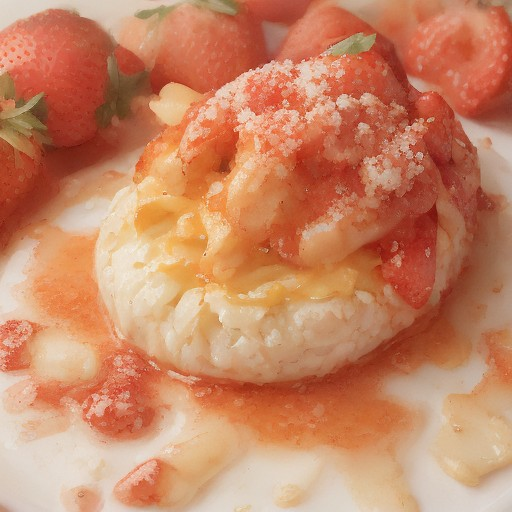

パスタ
とろけるチーズ × タッカルビチキン: イチゴの甘酸っぱさとスパイシーな唐辛子の悪魔的スパイスが炸裂！

タッカルビチキンとチーズの組み合わせで、その独特な食感とスパイシーな風味を活かした、悪魔的美味しい一品を堪能！イチゴの甘酸っぱさと唐辛子の辛味が絶妙に調和し、食欲をそそる一品に仕上がります。
💡 こんな時・こんな人におすすめ！
パーティーや特別な日のお祝いに、インパクト大な一品を召し上がって、さらに印象的な夜を演出しましょう！
📋 必要な材料（ポストイット風）
材料リスト 1
- タッカルビチキン150g
- とろけるチーズ150g
- イチゴ100g
材料リスト 2
- 唐辛子適量
- 甘辛のスパイス(ゴチジャポ)、塩、こしょう適量
🍳 作り方ステップ
1
1. タッカルビチキンを一口サイズに切り、塩コショウで味付けします。
2
2. 好きなチーズを小さくカットし、タッカルビチキンと一緒に、フライパンで弱火で加熱します。
3
3. 1. にあるチーズを溶かし、2. にあるタッカルビチキンを加えて混ぜ合わせます。
4
4. 1. にあるチーズとタッカルビチキンを、お好みでイチゴと唐辛子で盛り付けます。